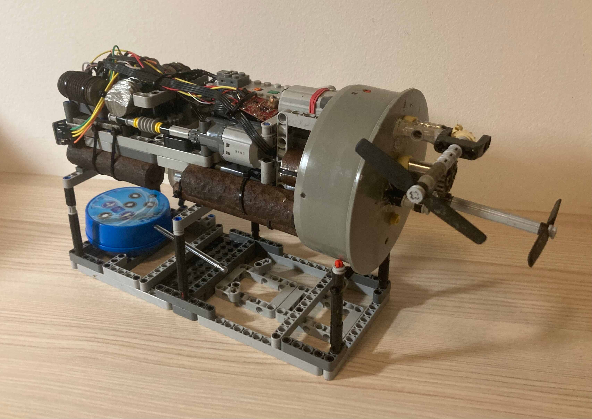

O mně | Štěpán Blaha
Ahoj, jmenuji se Štěpán Blaha a pocházím z Hradce Králové. Jsem studentem druhého ročníku bakalářského programu Kybernetika a robotika na ČVUT FEL v Praze.
O bastlení jsem se začal více zajímat v posledním ročníku gymnázia. V té době vznikl můj dodnes nejoblíbenější projekt - dálkově ovládaná ponorka. Když jsem ji stavěl, neměl jsem ještě 3D tiskárnu, chyběly mi zkušenosti s elektronikou a s programováním jsem teprve začínal.

Od té doby jsem zrealizoval spoustu dalších nápadů, včetně například malé robotické ruky. Zkušenosti z těchto projektů mě výrazně posunuly a zdokonalil jsem se především ve 3D modelování, 3D tisku a programování.
Když se zrovna nevěnuji škole nebo vlastním projektům, rád si zajdu do posilovny, zahraju si něco na počítači a baví mě lyžování.